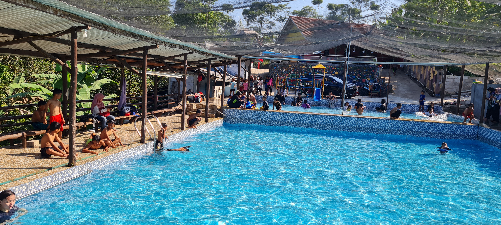
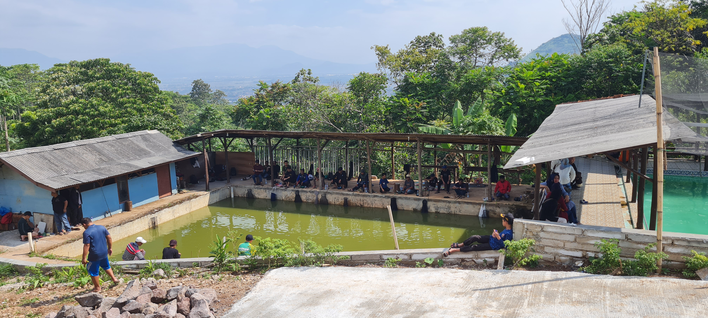
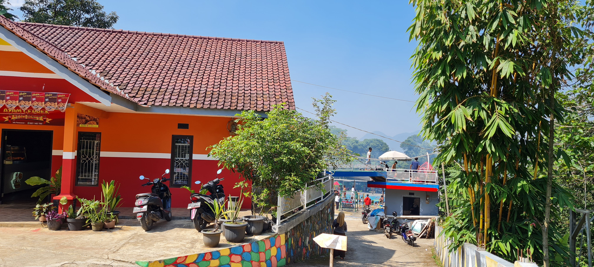

Kolam Renang

Kolam renang di Bulakan Park adalah destinasi rekreasi yang memikat, menggabungkan keindahan alam dengan fasilitas modern untuk memberikan pengalaman berenang yang tak terlupakan. Terletak di tengah-tengah kebun hijau yang luas, kolam renang ini menawarkan suasana yang tenang dan menyegarkan bagi para pengunjung.
Dengan desain arsitektur yang estetis, kolam renang Bulakan Park memadukan elemen-elemen alamiah seperti tanaman hijau dan pepohonan rindang, menciptakan nuansa tropis yang menenangkan. Air kolam yang jernih dan segar menjadi daya tarik utama, memberikan kesan alami dan memberikan kepuasan bagi para penikmat renang.
Pemancingan

Pemancingan di Bulakan Highland Park adalah surga bagi para pecinta olahraga memancing yang mencari pengalaman unik di tengah perbukitan yang indah. Terletak di ketinggian, pemancingan ini menawarkan pemandangan spektakuler dari sekitar perbukitan dan udara segar yang menyejukkan, menciptakan atmosfer yang sangat berbeda dari pemancingan biasa.
Kolam-kolam memancing di Bulakan Highland Park didesain dengan teliti, menciptakan lingkungan yang mirip dengan habitat alami ikan. Air kolam yang jernih dan keberagaman ikan menjadi daya tarik utama, memberikan tantangan menarik bagi para pemancing dari berbagai tingkat keahlian.
Jajanan
Di Bulakan Park, pengalaman kuliner semakin menggairahkan dengan kehadiran beragam jajanan yang menggoda selera. Khususnya, warung-warung di sekitar area tersebut menawarkan aneka hidangan lezat, termasuk ayam geprek dan berbagai jajanan khas warung yang memanjakan lidah.
Salah satu yang menjadi favorit para pengunjung adalah ayam geprek, hidangan yang menggabungkan cita rasa khas ayam goreng dengan sensasi kecrispy-an dan kepedasan saus sambal yang disajikan. Ayam geprek ini menjadi pilihan populer karena menyajikan pengalaman menyantap ayam yang renyah di luar dan lembut di dalam, dilengkapi dengan sentuhan bumbu pedas yang pas.
Franchise Alibaba

Franchise Alibaba di Bulakan Park memberikan sentuhan unik pada menu mereka dengan menyajikan hidangan populer Indonesia, yaitu ayam geprek. Di tengah keindahan Bulakan Park, restoran ini menghadirkan pengalaman kuliner yang menggabungkan cita rasa khas Timur Tengah dengan kepedasan dan kelezatan ayam geprek.
Ayam geprek ala Alibaba di Bulakan Park menyuguhkan potongan ayam yang digeprek dengan tepung crispy dan disiram dengan sambal pedas yang menggoda selera. Hidangan ini tidak hanya memuaskan selera para penggemar makanan pedas, tetapi juga memberikan sentuhan eksotis pada menu restoran.
Warung
Warung di Bulakan Park adalah oase kuliner yang sederhana namun memikat, menawarkan hidangan-hidangan lokal yang autentik di tengah keindahan alam Bulakan Park. Dikelilingi oleh hijau pepohonan dan nuansa kebun yang menenangkan, warung ini menyediakan tempat istirahat yang sempurna bagi para pengunjung yang ingin menikmati santapan ringan atau minuman segar setelah menjelajahi keindahan alam sekitarnya.
Menu warung di Bulakan Park mencakup berbagai hidangan khas daerah, mulai dari gorengan tradisional, nasi goreng, hingga jajanan ringan yang lezat. Suasana warung ini bersahaja namun bersahabat, menciptakan ruang yang ramah bagi keluarga, teman, atau bahkan para solo traveler yang mencari tempat santai untuk menikmati makanan ringan.